import numpy as np
import scipy.fft as fft
import matplotlib.pyplot as pltImage Processing Demos
# black and white
img = np.ones(shape=(4,4))
img[2,2] = 0
plt.imshow(img, cmap="grey")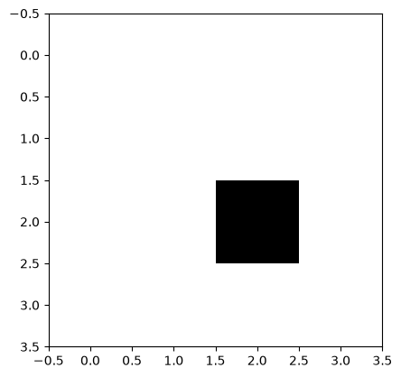
# colour image
img = np.ones(shape=(4,4,3))
img[2,2,0:2] = 0
img[0,0,:] = [.5, .5, .5]
img[2,1,:] = [1, 0, 0]
plt.imshow(img)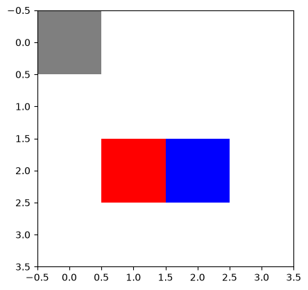
# Generate a sample "continuous" signal
# Two constant frequencies
f1 = 15 # Hz
f2 = 60 # Hz
# and amplitudes
a1 = 1
a2 = 20
# Time interval
T = 1 / (f2 * 20)
# period is the greatest common denominator of the two frequencies
P = 1 / np.gcd(int(f1), int(f2))
# Number of samples
N = int(P / T) + 10
# this time, define spatial coordinates
t = np.arange(N) * T
img = np.zeros((N, N))
for row in range(N):
shift = 0
shift = row * 2 * np.pi / N
img[row,:] = a1 * np.cos(f1 * 2*np.pi*t + shift) + a2 *np.cos(f2 * 2*np.pi*t + shift)
# display as an image
plt.imshow(img, cmap="grey")
plt.colorbar(label="Amplitude")
print(f"Image shape: {img.shape}")
plt.figure()
plt.plot(img)
plt.show()Image shape: (90, 90)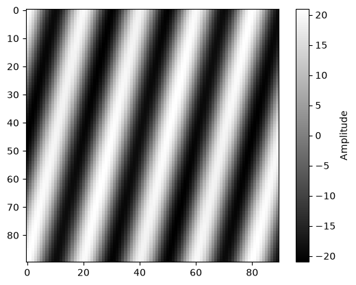
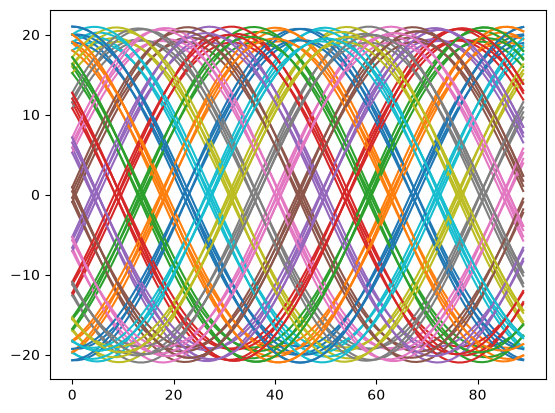
# 2D fft!
extent = [-N // 2, N // 2, -N // 2, N // 2]
F = fft.fftshift(fft.fft2(img)) * 2 / N**2
plt.imshow(abs(F), extent=extent)
plt.colorbar(label="Magnitude")
plt.xlim([-20, 20])
plt.ylim([-20, 20])
plt.figure()
phase_mask = abs(F) > .5
plt.imshow(np.angle(F), extent=extent)
plt.colorbar(label="Phase")
plt.xlim([-20, 20])
plt.ylim([-20, 20])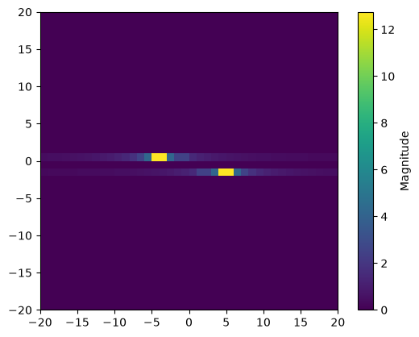
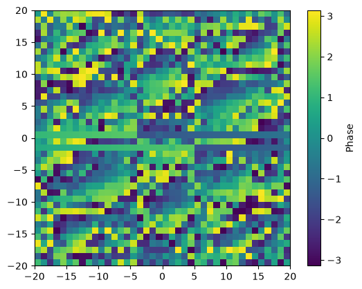
Loading images with Pillow
A popular library for image processing, forked from the now-defunct PIL (python image library). Used under the hood by PyTorch, Scikit-Image, Matplotlib, and almost every other Python library that works with images (except for openCV).
from PIL import Image
from PIL.Image import Transform, Resampling
tux = Image.open("Tux.png")
tux# Tux here has an indexed colour pallette
print(tux.getbands()) # channels
palette = tux.getpalette()
print(f"Tux is drawn with {len(palette) // 3} colours. The first few are:")
for c in range(5):
print(palette[c*3:c*3+3])('P',)
Tux is drawn with 194 colours. The first few are:
[255, 255, 255]
[131, 82, 4]
[210, 168, 81]
[230, 179, 63]
[91, 58, 5]np_tux = np.asarray(tux)
print(np_tux.shape)
plt.imshow(np_tux, cmap="grey")(314, 265)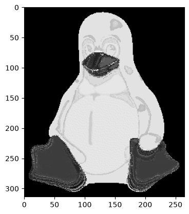
rgb_tux = tux.convert("RGB") # from palette to RGB
np_tux = np.asarray(rgb_tux) / 255 # rescale as float with max 1
print(np_tux.shape)
print(np_tux[0,0,:])(314, 265, 3)
[1. 1. 1.]plt.imshow(np_tux)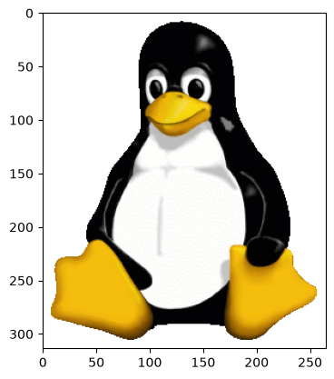
# write the new RGB image to disk, still as PNG
rgb_tux.save("rgb_tux.png")%ls -lh *.png Volume in drive C is Windows
Volume Serial Number is FCBC-E78B
Directory of c:\Users\ccurtis\Documents\f26\demo_code\14_images
Directory of c:\Users\ccurtis\Documents\f26\demo_code\14_images
11/24/2026 09:58 AM 367,700 flower.png
11/26/2026 10:05 AM 28,577 rgb_tux.png
11/24/2026 09:58 AM 11,913 Tux.png
3 File(s) 408,190 bytes
0 Dir(s) 130,977,124,352 bytes free# What does the fourier transform of Tux look like?
fig, axes = plt.subplots(3, 3, figsize=(12, 12))
channel_names = ["Red", "Green", "Blue"]
extent = [-np_tux.shape[1] // 2, np_tux.shape[1] // 2, -np_tux.shape[0] // 2, np_tux.shape[0] // 2]
for i in range(3):
# Huge DC component, so clamp it
axes[0,i].imshow(np_tux[:,:,i], cmap="grey")
axes[0,i].set_title(channel_names[i])
F_channel = fft.fftshift(fft.fft2(np_tux[:,:,i]))
# Magnitude
axes[1,i].imshow(abs(F_channel), vmax=30, cmap="grey", extent=extent)
# Phase
axes[2,i].imshow(np.angle(F_channel), cmap="grey", extent=extent)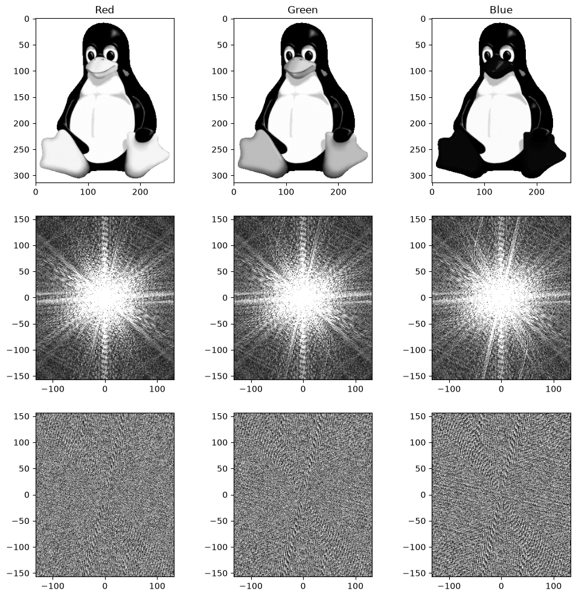
Supervised learning of image data
Some images are simple enough that the pixels can be used directly as features to train a model. The following demo is copied from https://scikit-learn.org/stable/auto_examples/classification/plot_digits_classification.html.
from sklearn import datasets, metrics, svm
from sklearn.model_selection import train_test_split
# load the mnist dataset
digits = datasets.load_digits()
_, axes = plt.subplots(nrows=1, ncols=4, figsize=(10, 3))
for ax, image, label in zip(axes, digits.images, digits.target):
ax.set_axis_off()
ax.imshow(image, cmap=plt.cm.gray_r, interpolation="nearest")
ax.set_title("Training: %i" % label)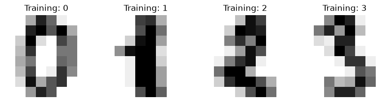
digits.images[0, :, :].reshape((1, -1))array([[ 0., 0., 5., 13., 9., 1., 0., 0., 0., 0., 13., 15., 10.,
15., 5., 0., 0., 3., 15., 2., 0., 11., 8., 0., 0., 4.,
12., 0., 0., 8., 8., 0., 0., 5., 8., 0., 0., 9., 8.,
0., 0., 4., 11., 0., 1., 12., 7., 0., 0., 2., 14., 5.,
10., 12., 0., 0., 0., 0., 6., 13., 10., 0., 0., 0.]])# flatten the images
n_samples = len(digits.images)
data = digits.images.reshape((n_samples, -1))plt.hist(digits.target, bins=10, width=0.75)(array([178., 182., 177., 183., 181., 182., 181., 179., 174., 180.]),
array([0. , 0.9, 1.8, 2.7, 3.6, 4.5, 5.4, 6.3, 7.2, 8.1, 9. ]),
<BarContainer object of 10 artists>)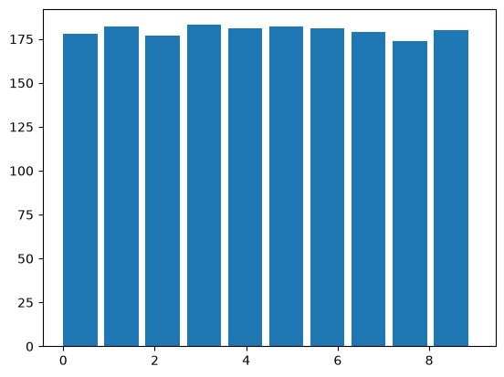
plt.plot(digits.target, '.')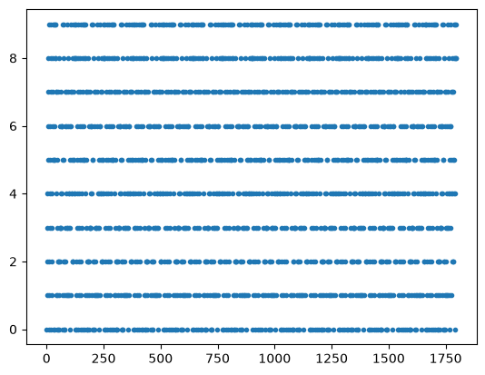
from sklearn.model_selection import cross_val_score
# Create a classifier: a support vector classifier
clf = svm.SVC(gamma=0.001)
# Split data into 50% train and 50% test subsets
X_train, X_test, y_train, y_test = train_test_split(
data, digits.target, test_size=0.5, shuffle=False
)
# Learn the digits on the train subset
clf.fit(X_train, y_train)
# add cross validation to be rigorous
cross_val_score(clf, X_train, y_train, scoring="accuracy")array([0.93888889, 0.97777778, 0.9 , 0.97765363, 0.95530726])# Predict the value of the digit on the test subset
predicted = clf.predict(X_test)
_, axes = plt.subplots(nrows=1, ncols=4, figsize=(10, 3))
for ax, image, prediction in zip(axes, X_test, predicted):
ax.set_axis_off()
image = image.reshape(8, 8)
ax.imshow(image, cmap=plt.cm.gray_r, interpolation="nearest")
ax.set_title(f"Prediction: {prediction}")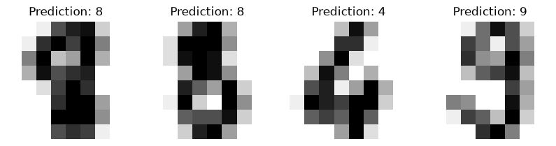
disp = metrics.ConfusionMatrixDisplay.from_predictions(y_test, predicted)
disp.figure_.suptitle("Confusion Matrix")
plt.show()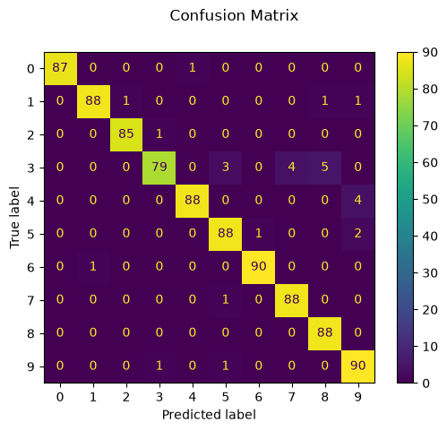
# look at some that were bad
misclassed = y_test != predicted
_, axes = plt.subplots(nrows=1, ncols=6, figsize=(15, 3))
for ax, image, prediction, actual in zip(axes, X_test[misclassed], predicted[misclassed], y_test[misclassed]):
ax.set_axis_off()
image = image.reshape(8, 8)
ax.imshow(image, cmap=plt.cm.gray_r, interpolation="nearest")
ax.set_title(f"Prediction: {prediction}, Actual: {actual}")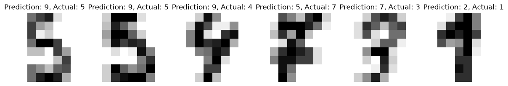
Geometric transforms
Let’s grab yet another example image (this one is from my own collection).
magpie = Image.open("magpie.jpg")
magpie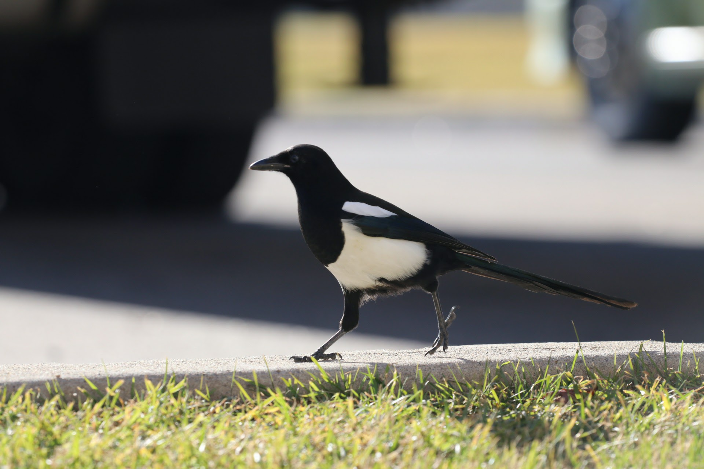
# resize to a square aspect ratio
magpie_squished = magpie.resize((64, 64))
plt.imshow(magpie_squished)# What difference does interpolation make?
magpie_squished_nearest = magpie.resize((64,64), resample=Resampling.NEAREST)
# magpie_squished_nearest
plt.imshow(magpie_squished_nearest)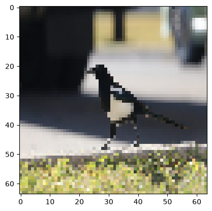
# What about the difference?
# We can convert to numpy and compute directly, or use PIL's ImageChops module: https://pillow.readthedocs.io/en/stable/reference/ImageChops.html
from PIL import ImageChops
# subtract and scale by 10x to show difference
plt.imshow(ImageChops.subtract(magpie_squished, magpie_squished_nearest, scale=0.1))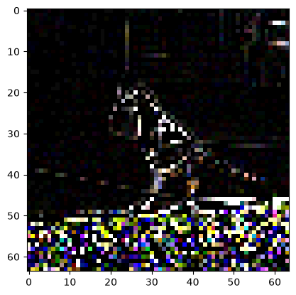
# can also crop, but we need to know where to do it
left = 550
top = 250
magpie_cropped = magpie.crop((left, top, left+512, top+512)).resize((64,64))
magpie_cropped# Go nuts, rotate, crop, shear, etc
# Affine arguments described by https://en.wikipedia.org/wiki/Affine_transformation#Image_transformation
magpie.rotate(25).transform(magpie.size, Transform.AFFINE, data=[1, 1, 0, 0, 1, 0])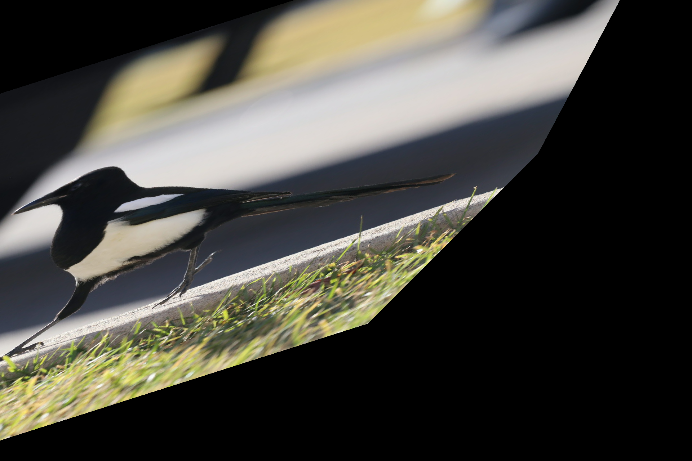
Point operators
# Look at the image histogram
def plot_hist(img):
counts = img.histogram() # all channels concatenated
colours = ["r", "g", "b"]
for c in range(3):
plt.plot(counts[c*256:c*256+256], color=colours[c])
plot_hist(magpie)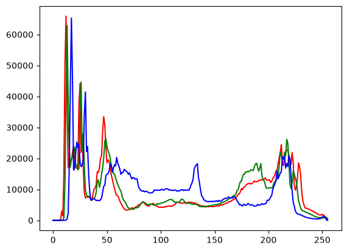
# Bring in the ImageOps module to apply point-wise operations https://pillow.readthedocs.io/en/stable/reference/ImageOps.html#module-PIL.ImageOps
from PIL import ImageOps
magpie_eq = ImageOps.autocontrast(magpie, cutoff=0.2)
magpie_eq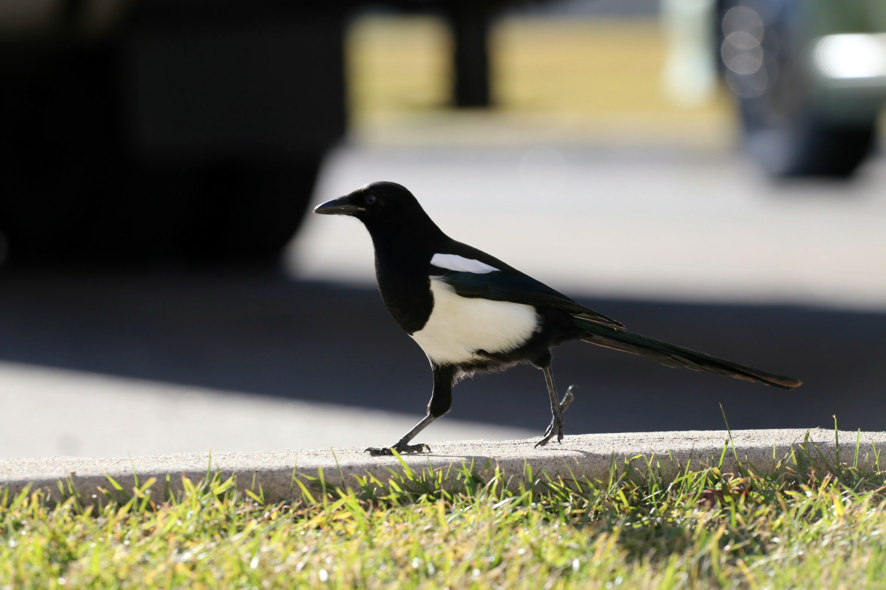
plot_hist(magpie_eq)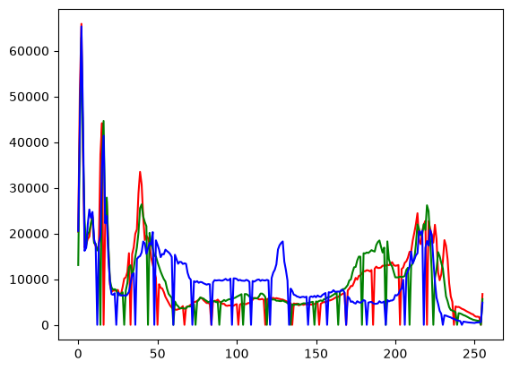
# create an image mask
magpie_np = np.asarray(magpie)
mask = (magpie_np < 30).max(axis=2)
plt.imshow(magpie_np.max(axis=2) * mask * 255)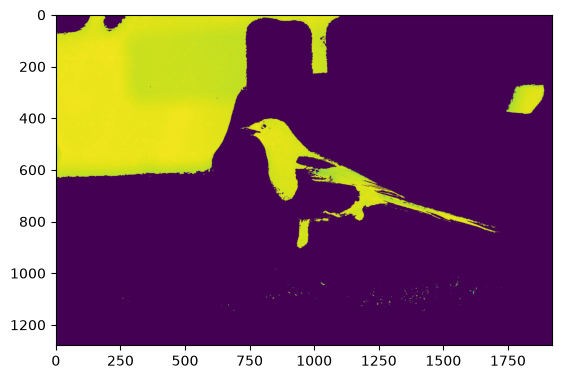
# hospital example
# Convolution example - not shown
patients = np.array([1, 3, 4, 2, 1])
doses = np.array([3,2,1])
np.convolve(patients, doses, mode="valid")Linear Filter Examples
We’ll do the same Sobel kernel three times - once using convolve2d from scipy.signal, once using PIL’s ImageFilter module, and (later) once in the frequency domain.
# Get a nice well-behaved image
# From https://github.com/scikit-learn/scikit-learn/tree/78b2428198d0078d587e84ef89e7c273eff091cb/sklearn/datasets/images
flower = Image.open("flower.jpg")
# Convert to floating point and normalize
flower_np = np.asarray(flower) / 255
flowerfrom scipy import signal
# Sobel kernel
k = np.array([[-1, 0, 1],
[-2, 0, 2],
[-1, 0, 1]])
# convolution across colour channels
h = np.zeros_like(flower_np)
v = np.zeros_like(flower_np)
mag = np.zeros_like(flower_np)
for i in range(3):
h[:,:,i] = signal.convolve2d(flower_np[:,:,i], k, mode='same')
v[:,:,i] = signal.convolve2d(flower_np[:,:,i], k.T, mode='same')
mag[:,:,i] = np.sqrt(h[:,:,i]**2 + v[:,:,i]**2)
# rescale to 0-1
h = (h - h.min()) / (h.max() - h.min())
v = (v - v.min()) / (v.max() - v.min())
mag = (mag - mag.min()) / (mag.max() - mag.min())
fig, ax = plt.subplots(2, 2, figsize=(10,8))
ax[0,0].set_title("Original")
ax[0,0].imshow(flower_np)
ax[0,1].set_title("Horizontal edges")
ax[0,1].imshow(h)
ax[1,0].set_title("Vertical edges")
ax[1,0].imshow(v)
ax[1,1].set_title("Edge magnitude")
ax[1,1].imshow(mag > 0.2)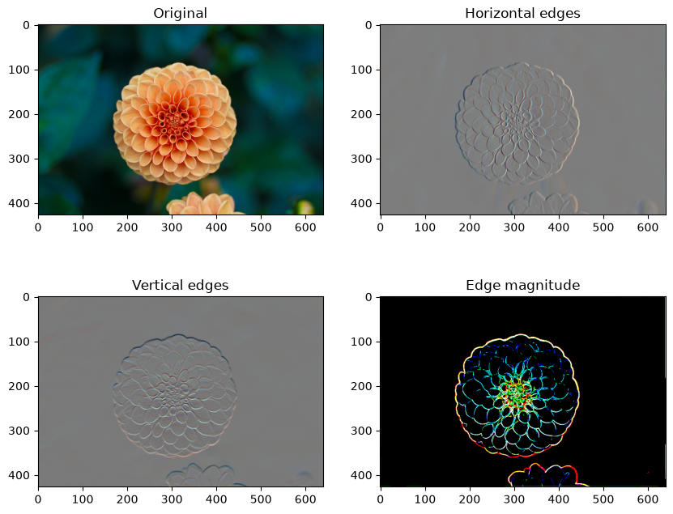
# The easy way: PIL
from PIL import ImageFilter
flower_edges = flower.filter(ImageFilter.FIND_EDGES)
flower_edges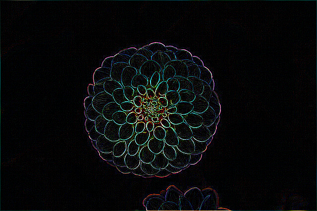
Nonlinear image filters
# Back to the magpie for this example
magpie_edges = magpie.filter(ImageFilter.FIND_EDGES)
magpie_edges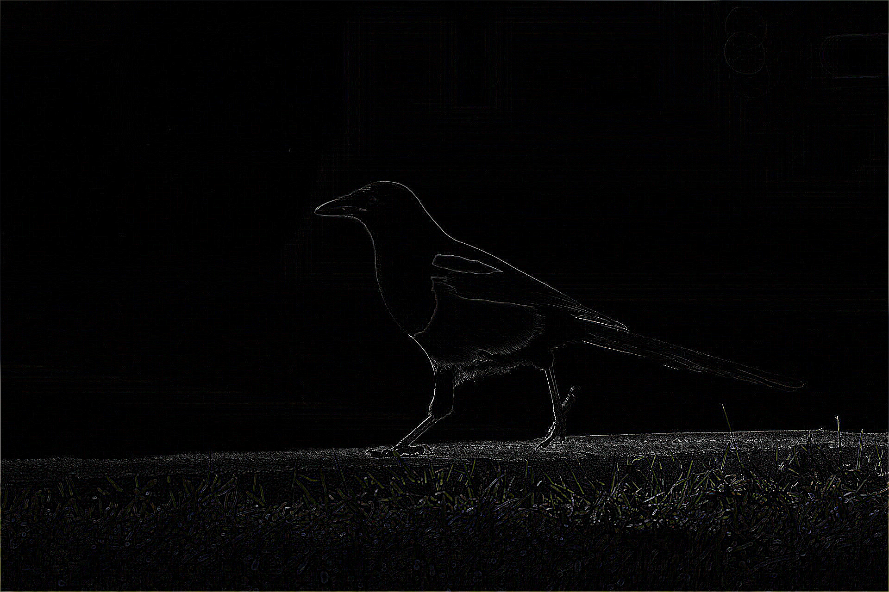
# binarize
outline = magpie_edges.point(lambda p: 255 if p > 30 else 0)
outline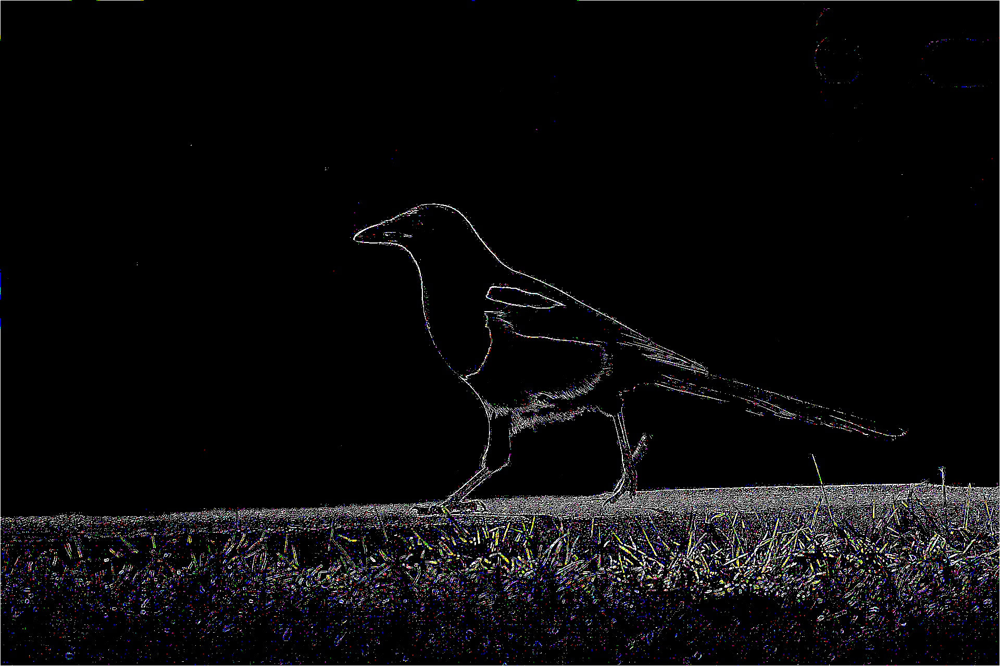
# dilate - make them thicker
dilated = outline.filter(ImageFilter.MaxFilter(5))
dilated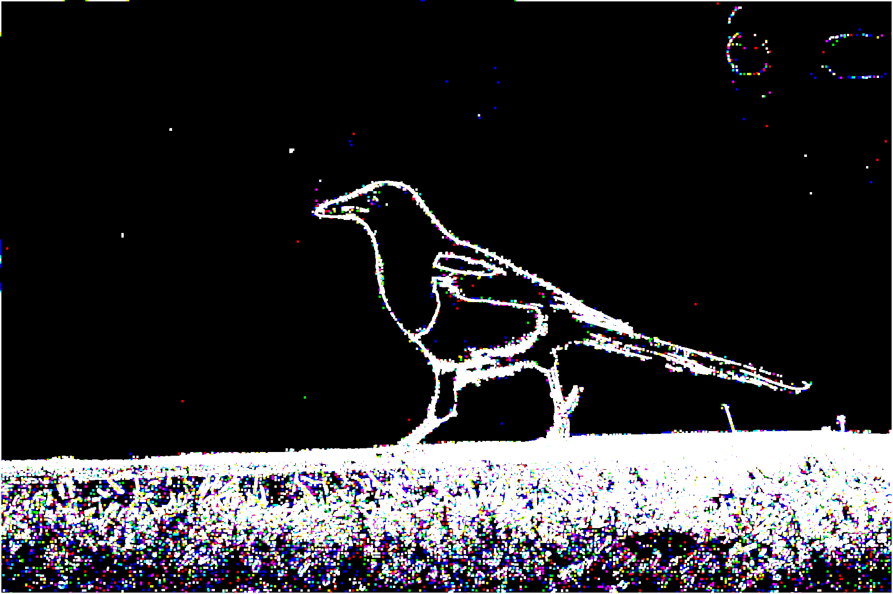
# erode - clean up noise
eroded = dilated.filter(ImageFilter.MinFilter(5))
eroded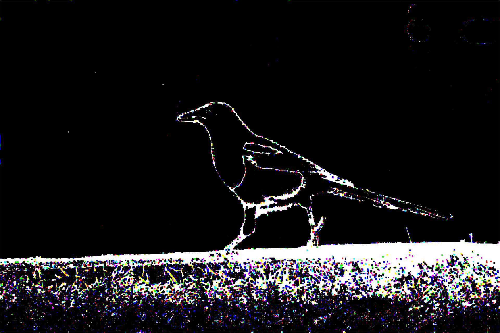
# still kind of noisy, maybe median?
cleaned = dilated.filter(ImageFilter.MedianFilter(5))
cleaned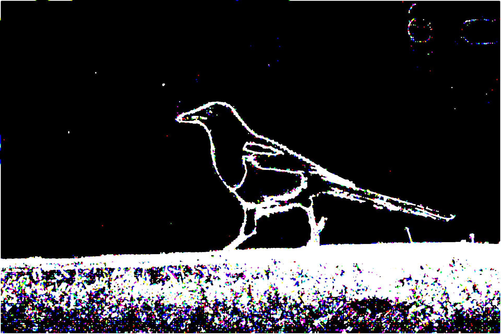
Manipulating frequencies
Did not get to this in class, but I’ll leave it for your enjoyment.
# Plot all the channels
fig, ax = plt.subplots(2, 2, figsize=(10,8))
print(flower_np.shape)
ax[0, 0].imshow(flower_np)
ax[0, 0].set_xlabel("Full colour")
ax[0, 1].imshow(flower_np[:,:,0], cmap='Greys_r')
ax[0, 1].set_xlabel("Red Channel")
ax[1, 0].imshow(flower_np[:,:,1], cmap='Greys_r')
ax[1, 0].set_xlabel("Green Channel")
ax[1, 1].imshow(flower_np[:,:,2], cmap='Greys_r')
ax[1, 1].set_xlabel("Blue Channel")# While we're at it, save a copy in in png and see the file size
flower.save("flower.png")
%ls -lh flower.*# Take the average of the colour channels to create a greyscale image
# Note: This can be weighted differently per channel! E.g. Y = 0.2125 R + 0.7154 G + 0.0721 B from https://scikit-image.org/docs/stable/auto_examples/color_exposure/plot_rgb_to_gray.html
flower_g = np.mean(flower_np, axis=2)
flower_g = 0.2125 * flower_np[:,:,0] + 0.7154 * flower_np[:,:,1] + 0.0721 * flower_np[:,:,2]
plt.imshow(flower_g, cmap='grey')# Frequency domain version
flower_f = np.fft.fft2(flower_g)
flower_f_shifted = np.fft.fftshift(flower_f)
# find the centre of the frequency axes
rows, cols = flower_f.shape
cr, cc = rows // 2, cols // 2
fig, ax = plt.subplots(1, 2, figsize=(10,5))
ax[0].set_title("Magnitude")
mag_img = ax[0].imshow(np.abs(flower_f_shifted), cmap="grey", vmax=100, extent=(-cc, cc, -cr, cr))
ax[1].set_title("Phase")
phase_img = ax[1].imshow(np.angle(flower_f_shifted), cmap="grey", extent=(-cc, cc, -cr, cr))
phase_img.set_clim(-np.pi / 2, np.pi / 2)# Create a low-pass filter
max_freq = 100
# zeros, except 1s at the centre
low_pass_filter = np.zeros_like(flower_g)
X, Y = np.meshgrid(np.arange(cols) - cc, np.arange(rows) - cr)
low_pass_filter[(Y)**2 + (X)**2 < (max_freq / 2)**2] = 1
# What about a gaussian?
sigma = max_freq / 3
low_pass_filter = np.exp(-(X**2 + Y**2)/(2 * sigma**2))
# multiply in frequency domain
low_f_flower = flower_f_shifted * low_pass_filter
fig, ax = plt.subplots(1, 2, figsize=(10, 5))
ax[0].set_title("Image filter")
ax[0].imshow(low_pass_filter, extent=(-cc, cc, -cr, cr), cmap="grey")
ax[1].set_title("Filtered magnitude")
ax[1].imshow(np.abs(low_f_flower), cmap="grey", vmax=100, extent=(-cc, cc, -cr, cr))
plt.show()# Inverse FFT of the filtered image
# There's always some tiny leftover imaginary component after ifft - drop it
plt.imshow(np.real(np.fft.ifft2(np.fft.ifftshift(low_f_flower))), cmap="grey")# High frequency version
high_f_flower = flower_f_shifted * (1 - low_pass_filter)
plt.imshow(np.real(np.fft.ifft2(np.fft.ifftshift(high_f_flower))), cmap="grey")# Sobel image filter in the frequency domain
# We need to pad the kernel to the same dimensions as the image
sobel_F = fft.fft2(k, flower_f.shape)
fig, ax = plt.subplots(1,1)
ax.imshow(abs(fft.fftshift(sobel_F)), cmap="grey")
ax.set_axis_off()# magnitude spectrum of product, plus inverse
fig, axes = plt.subplots(1, 2, figsize=(12, 4))
axes[0].set_title(r"Frequency domain flower $\times$ Sobel Filter")
axes[0].imshow(abs(fft.fftshift(sobel_F * flower_f)), cmap="grey")
axes[0].set_axis_off()
axes[1].set_title("Horizontal Edges")
axes[1].imshow(np.real(fft.ifft2(sobel_F * flower_f)), cmap="grey")
axes[1].set_axis_off()